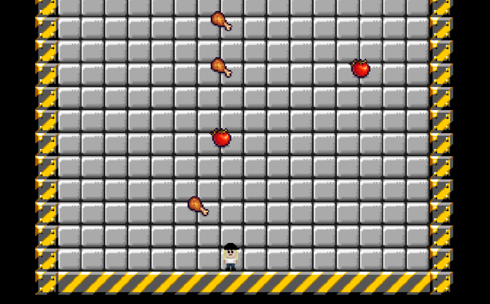
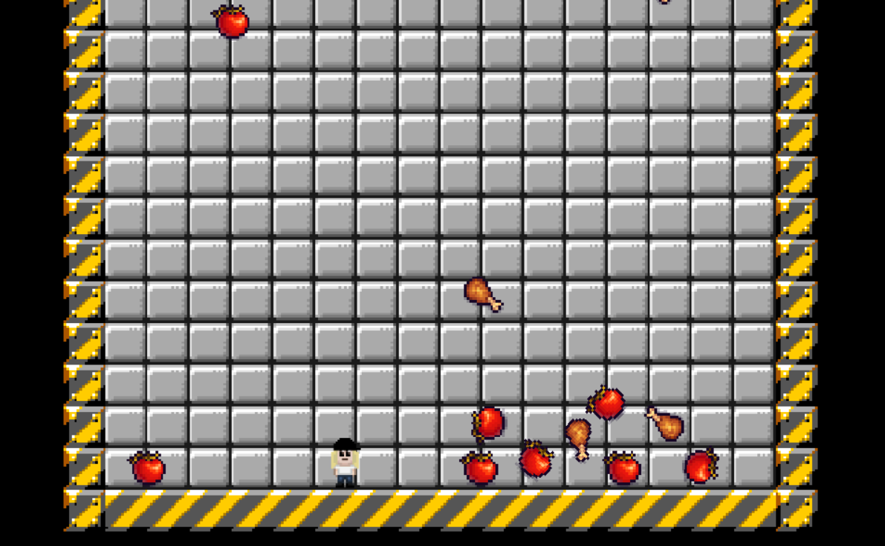

Summary
This game was a small project done during one day as a way to push myself to create a game in short time.
The purpose of the game is to steer the character from side to side and catch falling vegetables while avoiding the meat. When 10 vegetables have been collected the player wins, if the player is hit by a piece of meat, one loses. All pieces of vegetables that the player misses is piling up on the board to add difficulty.
Technical Walkthrough
First of all the steering of the character was added with a square hitbox to let the player move from side to side. Boundaries were added to sides and bottom to force the player to stay in screen.
I designed the front screen and the character but all other assets were found on Unity Asset Store.
Both the meat and the vegetables are spawned on random heights and width above the screen. Gravity is added to get them to fall down. The number of falling objects that can exist at the same time is determined by a counter. The meat is labeled as enemy and when hitting the ground it dissapears and if it hits the player, the game ends. The vegetables are labeled points and if the bottom of the vegetable hits the head of the player, the count score goes up by one and the vegetable dissapears. When the player has collected 10 coins, the game ends with the winning screen.
This game has a lot of things I would like to develop but it was a fun project to do just to get me working on a game in a short period of time.